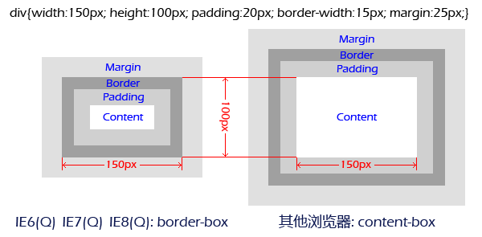

根据 CSS 2.1 规范的描述，可以通过给一个元素设置 'width' 和 'height' 以定义其内容尺寸，即这个尺寸是作用在该元素的 content box 上的。
表格元素 TABLE 是一个特例，表格的内容区域是由其 border box 决定的，因此在 TABLE 上设置的 'width' 和 'height' 将作用在其 border box 上。
以上提到的 content box 和 border box 是盒模型中的概念，请参考 CSS 2.1 规范 8 Box model 中的内容。
关于 'width' 和 'height' 的更多信息，请参考 CSS 2.1 规范 10.2 Content width: the 'width' property 和 10.5 Content height: the 'height' property 中的内容。
如果一个页面使浏览器工作在混杂模式下，那么当给一个设置了 'padding' 或 'border-width' 的非替换元素设置 'width' 或 'height' 以控制其尺寸时，这个元素在 IE 和其他览器中的实际尺寸将是不同的。
这个问题将导致页面中的小部分区域、甚至整体区域在某些浏览器中的布局发生混乱。
| 所有浏览器的混杂模式 (Q) |
|---|
当给一个元素设置 'width' 或 'height' 时，他们在不同的浏览器中作用到盒模型的位置是不同的。
具体差异请参考下表：
| IE6(Q) IE7(Q) IE8(Q) | Firefox(Q) Opera(Q) Safari(Q) Chrome(Q) | IE6(S) IE7(S) IE8(S) Firefox(S) Opera(S) Safari(S) Chrome(S) | |
|---|---|---|---|
| 非替换元素 (DIV/H1/P/UL/LI...) | border box | content box | content box |
| IMG | content box1 | content box | content box |
| TABLE | border box | border box | border box |
| HR/BUTTON/INPUT[type=button/submit/reset]2 | border box | border box | border box |
| INPUT[type=text]/TEXTAREA | border box | border box | content box |
| IFRAME | padding box | content box | content box3 |
【注】
1. IMG 元素在 IE6(Q) IE7(Q) IE8(Q) 下无法设置 'padding'，其值永远为 0。也就是说，IMG 元素的盒模型在这些浏览器中，其 padding box 与其 content box 是重合的。
2. 和 TABLE 元素一样，目前所有的主流浏览器也都认为 HR/BUTTON/INPUT[type=button/submit/reset] 元素的内容区域是由 border box 决定的，因此在这些元素上设置的 'width' 和 'height' 将作用在这些元素的 border box 上。
3. IFRAME 元素在 IE6(S) 下有一个 Bug，该元素实际使用的 'padding-right' 和 'padding-bottom' 的值将分别多出其 'border-right-width' 和 'border-bottom-width' 的值的 2 倍。
从上表可以看出，'width'、'height' 应用到不同的元素时，其作用位置有以下几处差异：
当给一个非替换元素设置 'width'、'height' 时，它们在 IE6(Q) IE7(Q) IE8(Q) 中被作用到了该元素的 border box，也就是说在这些浏览器中，'width'、'height' 并不被认为是“内容尺寸”。
这个差异的影响范围很广，常被称为“IE盒模型Bug”。只要一个页面使浏览器运行在混杂模式 (Q) 下，在 IE 和非 IE 浏览器中的页面布局都可能产生较大差异。
请参考下图：

也就是说，在 IE6(Q) IE7(Q) IE8(Q) 下，设置的 'width' 和 'height' 将包含该元素的内容尺寸 + 'padding' 尺寸 + 'border-width' 尺寸。
该问题在 IE6(S) 中被修复。
当给一个 INPUT[type=text]/TEXTAREA 元素设置 'width'、'height' 时，它们在所有浏览器的混杂模式 (Q) 中都被作用到了 border box，而在所有浏览器的标准模式 (S) 中则作用到了 content box。
由于一个页面要么触发标准模式 (S)，要么触发混杂模式 (Q)，因此这个差异并不会引起兼容性问题。（排除 IE 的 DTD 解析问题，详细信息请参阅“参见”一节的内容。）
当给一个 IFRAME 元素设置 'width'、'height' 时，它们在 IE6(Q) IE7(Q) IE8(Q) 中被作用到了 padding box。
与第一点相同，只要一个页面使浏览器运行在混杂模式 (Q) 下，在 IE 和非 IE 浏览器中的页面布局都可能产生布局及尺寸差异，当然，这个可能性较小，因为很少需要给一个 IFRAME 设置 'padding'。
可以通过使用能触发标准模式下 (S) 的 DTD 或使用 CSS 3 的新特性 box-sizing。
此问题引起的差异集中在各浏览器的混杂模式 (Q) 之间，当给同一个元素设置 'width'、'height' 时，它们的应用位置在所有浏览器的标准模式 (S) 中全部一致。因此要避免受此问题的影响，最好的方式就是使用能触发标准模式 (S) 的 DTD，如：
<!DOCTYPE html PUBLIC "-//W3C//DTD HTML 4.0//EN">
<!DOCTYPE html PUBLIC "-//W3C//DTD XHTML 1.0 Strict//EN" "http://www.w3.org/TR/xhtml1/DTD/xhtml1-strict.dtd">
<!DOCTYPE html>
关于DTD与渲染模式的关系，请参考 http://hsivonen.iki.fi/doctype/ 中的内容。
我们在开发过程中发现，有时候，如对页面中的大块区域进行布局时，将 'width' 和 'height' 作用到 border-box 是更灵活易用的，但 CSS 2.1 规范却规定了他们只能作用在 content-box 上。考虑到这个问题，CSS 3 草案中引入了一个新的特性：'box-sizing'。我们可以根据需要，通过给 'box-sizing' 设置不同的值来选择 'width' 和 'height' 的作用位置。
目前的主流浏览器都支持这个特性，在各浏览器中的特性名如下：
| IE 8, Opera 8.5+ | box-sizing |
|---|---|
| Firefox 1+ | -moz-box-sizing |
| Safari 3+, Chrome | -webkit-box-sizing |
'box-sizing' 有两个可选值：
关于 'box-sizing' 的更多信息，请参考 CSS3 草案 7.1. 'box-sizing' property 中的内容。
如果一个页面是在 IE6(Q) IE7(Q) IE8(Q) 的基础上设计的，即在有 IE 盒模型 Bug 时页面布局良好，但在其他浏览器中无 IE 盒模型 Bug 时布局混乱，又不想重构页面，那么简单快速的修复方式是通过设置 'box-sizing' 的值为 'border-box' 来使其他浏览器的尺寸作用位置与 IE6(Q) IE7(Q) IE8(Q) 相同。如：
* {
box-sizing:border-box;
-moz-box-sizing:border-box;
-webkit-box-sizing:border-box;
}
| 操作系统版本: | Windows 7 Ultimate build 7600 |
|---|---|
| 浏览器版本: |
IE6 IE7 IE8 Firefox 3.6 Chrome 4.0.302.3 dev Safari 4.0.4 |
| 测试页面: | box_model.html |
| 本文更新时间: | 2010-05-19 |
width height padding border-width box-sizing content-box border-box IE盒模型BUG